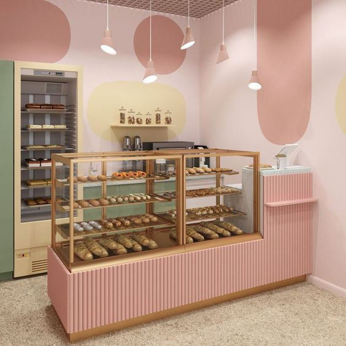
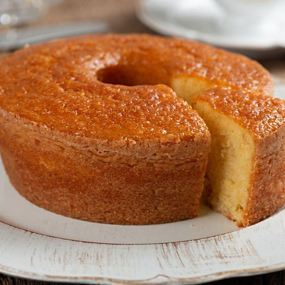
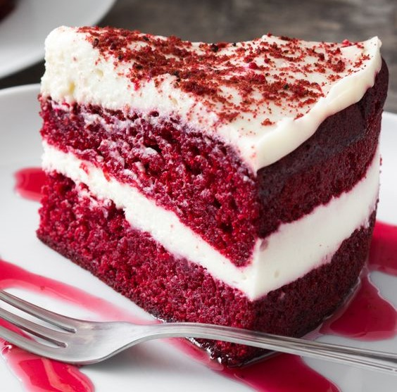

Blog
Nossa aconchegante loja!
Venha conhecer nossa loja física e aproveitar os nossos espaços!

Venha conhecer e aproveitar nossa loja, com um espaço bem decorado e aconcegante.
Aproveite para vir com a família ou amigos passar algum tempo de qualidade em lugar onde você
pode aproveitar e apreciar os doces preparados com muita dedicação.
Nossa loja conta com um ambiente harmônico e agradável feito para garantir a melhor experiência
para nossos clientes. Venha e confira!
Receitas simples!
Descubra como fazer um bolo de fubá fácil!

Disponibilizamos algumas receitas especiais. Veja os ingredientes necessários
pra o bolo de fubá:
- 1 colher de sopa de manteiga sem sal
- 1 colher de sopa mais 1 xícara de chá de farinha de trigo
- 3 ovos
- 1 e 1/2 xícara de chá de açúcar
- 3/4 xícara de chá de óleo vegetal
- 3/4 xícara de chá de leite integral
- 3/4 xícara de chá de fubá
- 1/2 xícara de chá de amido de milho
- 1 colher de sopa de fermento químico em pó (fermento para bolo)
Modo de preparo:
Com a ajuda de um papel, unte a forma com a manteiga e depois enfarinhe com uma colher de sopa
de farinha de trigo. Reserve;
Bata em um liquidificador os ovos, o açúcar, o óleo e o leite por 2 minutos. Adicione o fubá e o
amido de milho e bata por mais 2 minutos, depois adicione a farinha de trigo e o fermento em pó,
e bata apenas para misturar;
Despeje a massa na forma untada, enfarinhada e asse em forno preaquecido a 180 ºC por 25 a 30
minutos;
Espere esfriar para desenformar e sirva!
Dia internacional do chocolate!
Você sabia que existia um dia só para comemorar o chocolate?
Você sabia que no dia 7 de julho comemora-se em todo o mundo o Dia do
Chocolate? A data ficou
conhecida desta maneira por marcar a chegada do produto na Europa no século IV. Antes disso, a
mercadoria só era conhecida pelos povos maias e astecas.
A partir disso, ouro negro, como ficou conhecido o chocolate, se transformou em um símbolo de
status para a aristocracia europeia, sendo sinônimo de riqueza e poder. O produto só se tornou
popular após a Revolução Industrial.
No Brasil, as sementes do cacau só chegaram por volta de 1746, como presente para o fazendeiro
baiano Antônio Dias Ribeiro. Pelo clima e solo serem favoráveis para o plantio, as lavouras de
cacau prosperaram na Bahia.
De lá pra cá, o chocolate se tornou o queridinho dos brasileiros. Segundo dados da Associação
Brasileira da Indústria de Chocolates, Amendoim e Balas (Abicab), a sua produção no país
alcançou 511 mil toneladas em 2021.
Por Laís Maia, Rede Globo
Bolo Red Velvelt, você conhece a história?
Esse bolo causa muita curiosidade por sua cor chamativa e sabor, veja um pouco sobre essa
história:

A origem do Red Velvet é cheia de imprecisões. Mas vamos à certeza. “A família de bolos à qual
ele pertence, a dos velvet, ou aveludados, existe desde 1800, com primeiros registros depois da
guerra civil americana. É uma massa bem leve e sequinha, que leva vinagre e leitelho
(buttermilk) na receita. Era comum em sabores como abacaxi e limão.
Segundo ele, foi no século 20, surgiu o Red Velvet, que já tinha uma cor avermelhada por conta
da reação dos ingredientes ácidos. Devido a quebra da bolsa de Nova Iorque em 1929, chocolate
estava em falta, outra opção seria ferver a beterraba e colorir, até porque comprar corante
artificial naquela época era muito caro.
Outra história aponta para uma oportunidade enxergada por uma empresa de corantes americana, a
Adams Extract Company. Depois que o congresso estadunidense aprovou uma legislação que regulava
o uso de corantes alimentícios em 1938, John Adams, o criador da companhia, percebeu que um
impactante bolo vermelho poderia ser uma grande oportunidade comercial.
Na década de 40, a empresa imprimiu milhares de cartões com a receita E “encartou” em seus
produtos que poderiam ser utilizados no Red Velvet: extrato de baunilha, corante vermelho e
creme artificial com gosto de manteiga, que era muito popular por conta do racionamento de
alimentos durante a Segunda Guerra Mundial. Isso de acordo com informações dadas por Sterling
Crim, chefe do departamento de marketing da companhia, a uma reportagem de 2014 do jornal The
New York Times.
Mas, de lá pra cá, como ele voltou à moda? Ainda segundo o jornal de Nova Iorque, a culpa é da
Magnolia Bakery, badalada confeitaria que aparecia no seriado Sex And The City. “O bolo se
tornou um sucesso de vendas e também ganhou versão cupcake. O Red Velvet se tornou uma estrela”,
afirma a repórter de gastronomia Kim Severson, do periódico americano.
Então trouxemos uma receita super fácil, dessa delicia.
Embrast.com.br
Receitas simples!
Confira como fazer bolinho de chuva!
Disponibilizamos algumas receitas especiais. Veja os ingredientes necessários
pra o bolinho de Chuva:
- 2 ovos
- 1 xícara (chá) de leite
- 1 colher (sopa) de fermento em pó
- 1 colher (sopa) de canela para polvilhar
- 1 xícara de açúcar
- 2 e 1/2 xícaras de farinha de trigo
- 3 colheres (sopa) de açúcar para polvilhar
- 1 litro de óleo para fritar
Modo de preparo:
Misture todos os ingredientes até obter uma massa cremosa e homogênea.
Deixe aquecer uma panela com bastante óleo para que os bolinhos possam boiar.
Quando o óleo estiver bem quente (180º C), com uma colher, comece a colocar pequenas quantidades
de massa, e frite até que dourem por inteiro.
Coloque os bolinhos sobre papel absorvente e depois passe-os no açúcar com canela.